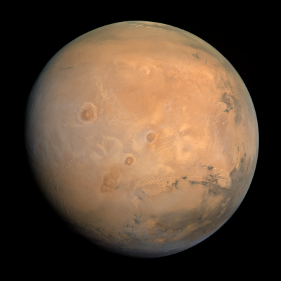

Марс
Марс – это четвертая по удаленности от Солнца планета. Марс относится к планетам земной группы и назван в честь древнеримского бога войны, аналога древнегреческому Аресу. Это самая маленькая после Меркурия планета. Диаметр Марса 6792 км, что составляет примерно половину диаметра Земли.
Общие характеристики
Поверхность Марса в основном состоит из базальта. Преобладание оксида железа в марсианской почве придает ей характерный красный цвет, поэтому его ещё называют "Красной планетой". Как и на Земле, на Красной планете есть долины, пустыни, горы и полярные шапки. У Марса есть ядро, мантия и кора. Ядро Красной планеты состоит из железа, никеля и серы. Оно окружено силикатной мантией и корой, состоящей из железа, магния, алюминия, кальция и калия.
На Марсе даже обнаружены дельты древних рек, наличие которых говорит о том, что когда-то на этой планете была вода. Атмосфера Марса намного тоньше земной. Она на 95% состоит из углекислого газа, в то время как атмосфера нашей планеты богата азотом и кислородом. Таким образом, свободно дышать на Марсе земляне не смогут. И всё же учёные считают Марс самой перспективной планетой для освоения, поскольку погодные условия на ней довольно приемлемы для человека.
У Марса есть два естественных спутника – Фобос и Деймос (обозначают «страх» и «ужас»), представляющие собой бесформенные каменные глыбы сравнительно небольших размеров. Они были обнаружены в 1877 году американским астрономом Асафом Холлом. Имена даны лунам в честь персонажей греческой мифологии, сыновей Ареса.
Время на Марсе
Марсианские солнечные сутки (сол) равны 24 часам и 39 минутам (на Земле средняя продолжительность солнечных суток составляют 24 часа и 4 минуты). Понятие «Сол», в первую очередь, создает удобства для операторов, которые длительное время управляют какими либо устройствами на поверхности Марса - марсоходами, неподвижными спускаемыми аппаратами или космическими аппаратами находящимися на орбите вокруг Марса. Весьма вероятно, что в скором времени получит свое собственное название и марсианский год. Продолжительность года на Марсе составляет 687 земных суток, или 670 «солов».
История открытия
Первые наблюдения Марса проводились до изобретения телескопа. Это были позиционные наблюдения с целью определения положений планеты по отношению к звёздам. Существование Марса как блуждающего объекта в ночном небе было письменно засвидетельствовано древнеегипетскими астрономами в 1534 году до н. э. Долгое время считалось, что на красной планете существует жизнь. Люди наблюдали на его поверхности объекты, казавшиеся им постройками, дорогами и даже гигантскими скульптурами. Однако на поверку марсианская цивилизация оказалась обманом зрения. Многочисленные исследовательские миссии пока тоже не подтвердили наличие какой-либо жизни на поверхности планеты.